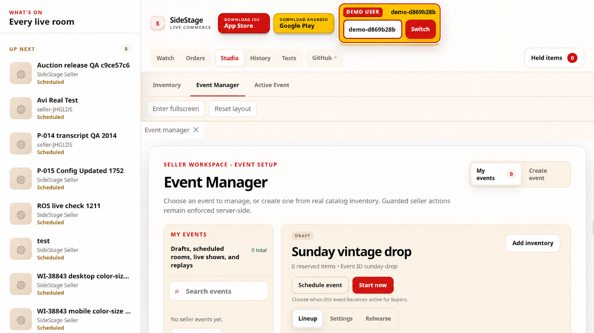
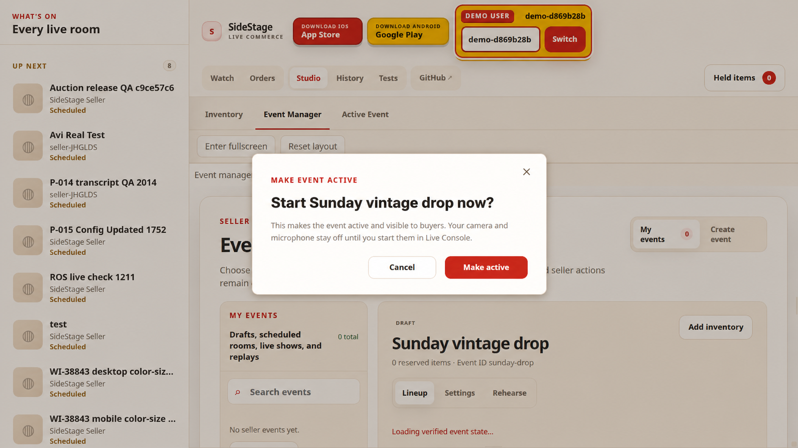
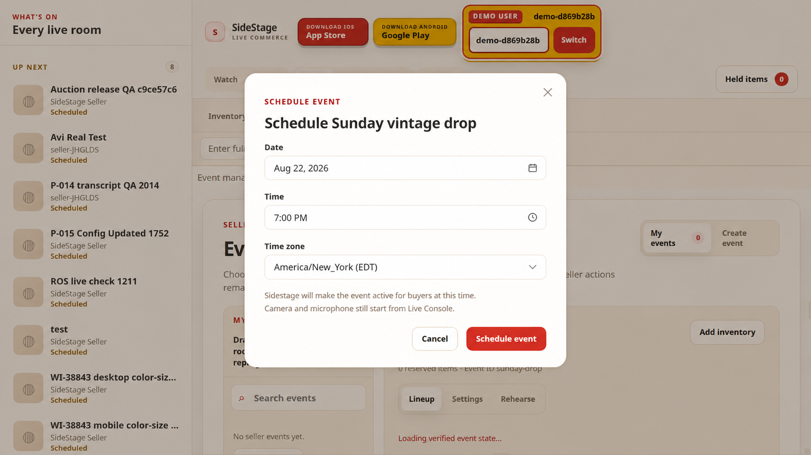
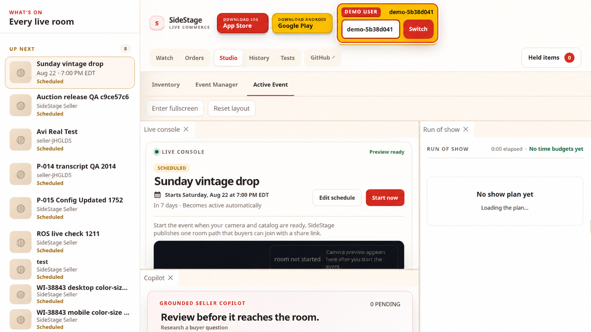

Sidestage Studio · Design review
Event activation and scheduling
Four coordinated states for making an event active now, scheduling it for later, and keeping the seller informed without conflating lifecycle activation with Live Console media controls.
Click any mockup to view it full size



